X844–X900¶
Hatzipolakis-Yiu Centers, Hirst Inverses & Crossdifferences
Hatzipolakis-Yiu points, the Yiu angle point (X848), Kiepert hyperbola multipliers, Hirst inverses, and Euler line intercepts.
X844–X900 (Hatzipolakis-Yiu Centers, Hirst Inverses & Crossdifferences) — 16 representative centers (from 57 in collection) constructed on acute reference triangle \((a, b, c) = (5, 6, 7)\) with unit baseline AB = \(1\).¶
X844INTERSECTION OF LINES X166X_167 AND X173X_503
X844 = X75-of-excentral-triangle
X845∩X173X_503
X845 = X63-of-excentral-triangle
X8464th SHARYGIN POINT
This point solves a problem posed by Antreas Hatzipolakis in Hyacinthos #3001, June 11, 2001. For the construction as a Sharygin point, see the description at X1281.
X847-CROSS CONJUGATE OF X4
X847 = barycentric product X91*X92
X848YIU ANGLE POINT
angle BXC : angle CXA : angle AXB =\(a : b : c\).
X8494th HATZIPOLAKIS-YIU POINT
Let D denote the circumcircle of triangle ABC. Let DA be the circle tangent to sideline BC and tangent to D at A. Let BA = AC∩DA and CA = AB∩DA, and define CB, CB and AC, AB cyclically. Define A' = CBAB∩ACBC, and define B' and C' cyclically. Then triangle A'B'C' is homothetic to ABC, and X849 is the center of homothety. See A. Hatzipolakis and P. Yiu, Hyacinthos #2056-2070, December, 2000.
X850BARYCENTRIC MULTIPLIER FOR KIEPERT HYPERBOLA
The barycentric product of X850 and the circumcircle is the Kiepert hyperbola.

X851-HIRST INVERSE OF X73
X851 is the X65-hirst inverse of X73.
X852-LINE CONJUGATE OF X4
X852 = X2-line conjugate of X4
X853INTERCEPT OF EULER LINE AND TRILINEAR POLAR OF X55
X853 = crossdifference of every pair of points on line X7X647
X854INTERCEPT OF EULER LINE AND TRILINEAR POLAR OF X56
X854 = crossdifference of every pair of points on line X8X647

X855INTERCEPT OF EULER LINE AND TRILINEAR POLAR OF X57
X855 = reflection of X851 in X859
X856INTERCEPT OF EULER LINE AND TRILINEAR POLAR OF X63
X856 = crossdifference of every pair of points on line X19X647

X857INTERCEPT OF EULER LINE AND TRILINEAR POLAR OF X75
X857 = inverse-in-orthocentroidal-circle of X379

X858COMPLEMENT OF X23
X858 is the complement of X23.

X859INTERCEPT OF EULER LINE AND TRILINEAR POLAR OF X81
X859 = midpoint of X851 and X855
X860INTERCEPT OF EULER LINE AND TRILINEAR POLAR OF X92
X860 = crossdifference of every pair of points on line X48X647

X861INTERCEPT OF EULER LINE AND TRILINEAR POLAR OF X9
X861 = crossdifference of every pair of points on line X57X647
X862INTERCEPT OF EULER LINE AND TRILINEAR POLAR OF X19
X862 = crossdifference of every pair of points on line X63X647
X863INTERCEPT OF EULER LINE AND TRILINEAR POLAR OF X31
X863 = crossdifference of every pair of points on line X75X647
X864INTERCEPT OF EULER LINE AND TRILINEAR POLAR OF X32
X864 = crossdifference of every pair of points on line X76X647

X865INTERCEPT OF EULER LINE AND TRILINEAR POLAR OF X512
X865 = crossdifference of every pair of points on line X99X647
X866INTERCEPT OF EULER LINE AND TRILINEAR POLAR OF X513
X866 = crossdifference of every pair of points on line X100X647
X867INTERCEPT OF EULER LINE AND TRILINEAR POLAR OF X514
X867 = crossdifference of every pair of points on line X101X647
X868CROSSPOINT OF X98 AND X523
X868 is the crosspoint of X98 and X523.
X869INTERSECTION OF LINES X1X_2 AND X31X_32
X869 = crossdifference of every pair of points on line X649X693
X870ISOGONAL CONJUGATE OF X869
X870 is the isogonal conjugate of X869.
X871ISOTOMIC CONJUGATE OF X869
X871 is the isotomic conjugate of X869.
X872INTERSECTION OF LINES X37X_42 AND X43X_75
X872 = X42-Ceva conjugate of (1500)
X873ISOGONAL CONJUGATE OF X872
X873 is the isogonal conjugate of X872.

X874INTERSECTION OF LINES X1X_75 AND X99X_670
X874 = trilinear pole of line X239X350
X875ISOGONAL CONJUGATE OF X874
X875 is the isogonal conjugate of X874.
X876ISOTOMIC CONJUGATE OF X874
X876 is the isotomic conjugate of X874.
X877INTERSECTION OF LINES X4X_69 AND X99X_112
Let T1 be the tangential triangle of hyperbola {A, B, C,X99,PU(37)}}. Let T2 be the tangential triangle of hyperbola {A, B, C,X4,X112,PU(39)}}. Let A'B'C' be the vertex triangle of T1 and T2. The lines AA', BB', CC' concur in X877. (Randy Hutson, December 29, 2015)
X878ISOGONAL CONJUGATE OF X877
X878 is the isogonal conjugate of X877.
X879ISOTOMIC CONJUGATE OF X877
X879 is the isotomic conjugate of X877.
X880INTERSECTION OF LINES X6X_76 AND X99X_670
X880 = P(1)U(11)∩U(1)P(11)
X881ISOGONAL CONJUGATE OF X880
X881 is the isogonal conjugate of X880.
X882ISOTOMIC CONJUGATE OF X880
X882 is the isotomic conjugate of X880.
X883INTERSECTION OF LINES X7X_8 AND X190X_644
X883 = isogonal conjugate of X884
X884ISOGONAL CONJUGATE OF X883
X884 is the isogonal conjugate of X883.
X885ISOTOMIC CONJUGATE OF X883
X885 is the isotomic conjugate of X883.
X886INTERSECTION OF LINES X99X_669 AND X512X_670
X886 = trilinear pole of line X2X670
X887ISOGONAL CONJUGATE OF X886
X887 is the isogonal conjugate of X886.
X888ISOTOMIC CONJUGATE OF X886
As the isogonal conjugate of a point on the circumcircle, X888 lies on the line at infinity.
X889INTERSECTION OF LINES X99X_898 AND X190X_649
X889 = trilinear pole of line X2X668
X890ISOGONAL CONJUGATE OF X889
X890 is the isogonal conjugate of X889.
X891ISOTOMIC CONJUGATE OF X889
As the isogonal conjugate of a point on the circumcircle, X891 lies on the line at infinity.
X892ISOGONAL CONJUGATE OF X351
X892 is the isogonal conjugate of X351.
X893-CROSS CONJUGATE OF X292
X893 = isogonal conjugate of X894
X894ISOGONAL CONJUGATE OF X893
X894 is the isogonal conjugate of X893.
X895ISOGONAL CONJUGATE OF X468
X895 is the isogonal conjugate of X468.
X896INTERSECTION OF LINES X1X_21 AND X9X_750
X896 = crosssum of X1 and X896
X897ISOGONAL CONJUGATE OF X896
X897 is the isogonal conjugate of X896.
X898ISOGONAL CONJUGATE OF X891
X898 is the isogonal conjugate of X891.
X899INTERSECTION OF LINES X1X_2 AND X6X_750
X899 = crossdifference of every pair of points on line X1X649
X900CROSSDIFFERENCE OF X6 AND X101
As the isogonal conjugate of a point that lies on the circumcircle, X900 lies on the line at infinity.